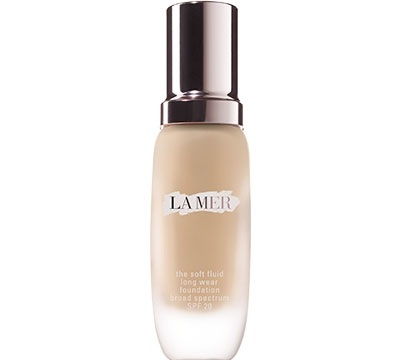
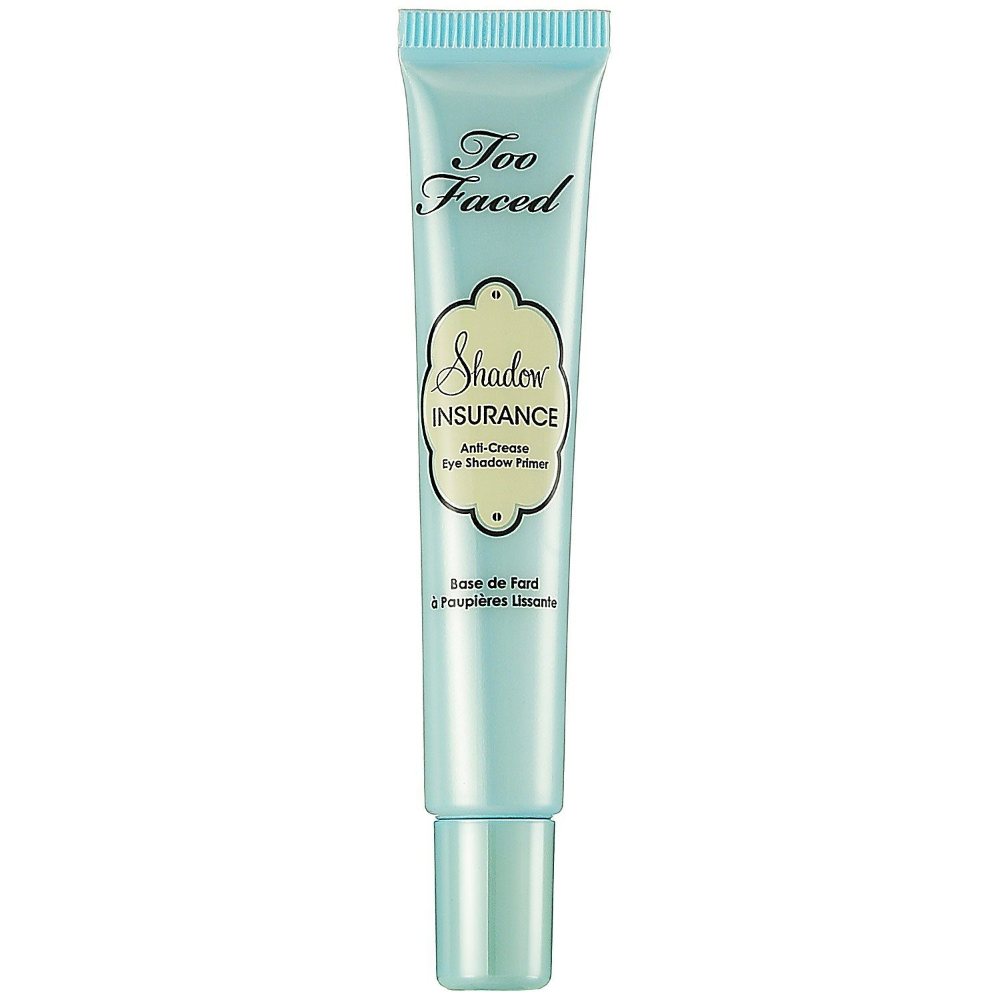

Pigment Smokey Eye Tutorial
Here is the list of products I used to create this look
On my skin I Used oil-free Primer from Laura Mercier
This is the first step to the flawless Face. Put it under foundation and you'll have a smooth, flawless canvas for application, allowing foundation to glide on easily and stay fresh and color-true for hours. Ideal for oily, sensitive, and acne-prone skin types, it helps mattify and control oil
My Foundation was from La Mer in color "Neutral".
This one is my favorite for many reasons. It has serum in it which keeps your skin fresh and hydrated. It really is a long wear foundation, it doesn't oxidize at all. But what amazes me is that it is humidity proof. Those of you who lives in Atlanta where humidity is so high would love this product. This is a skincare infused foundation, so overtime it will improve your skin condition as well.
Concealer is from Bobbi Brown in color "Porcelain"
As a setting powder I used Translucent Powder from Laura Mercier all over my skin.
On my eyes eyes I used Two Faced shadow insurance.
It locks down eyeshadows, intensifying color to ensure waterproof coverage for up to 24 hours.
Eyeshadows from Mac Cosmetics in "Brigt Pink" on the crease and "Espresso" on the lid.
Pigment from Inglot in color "111".
I am a Huge fan of Inglot pigments!

Long-Wear Gel Eyeliner from Bobbi Brown.
What I like about this product is that it's waterproof and sweat- and humidity-resistant wear. It also glides easily onto lids.
Mascara in Extreme Dimension 3D Black Lash from Mac cosmetics.
And of course Prep + Prime bFix+ setting spray from Mac Cosmetics was my favorite and final touch
Thank you for watching and reading, I hope you enjoyed! Stay tuned for more!